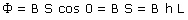
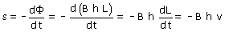
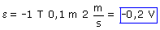

b)
 |
 Conocemos la expresión del flujo en función de L que depende del tiempo (Al desplazar el lado móvil cambiará el valor de L) por tanto calculamos la f.e.m instantánea |

Observa que L nos da la posición de la barra móvil, por tanto dL/dt será la velocidad de dicha barra

El signo de la f.em determina el sentido en que circulará la corriente inducida pero no es nada fácil su interpretación. El sentido de la corriente inducida se determina mejor con la ley de Lenz
Observación: Si la barra se moviera en sentido contrario la velcidad sería negativa y la f.e.m resultaría positiva